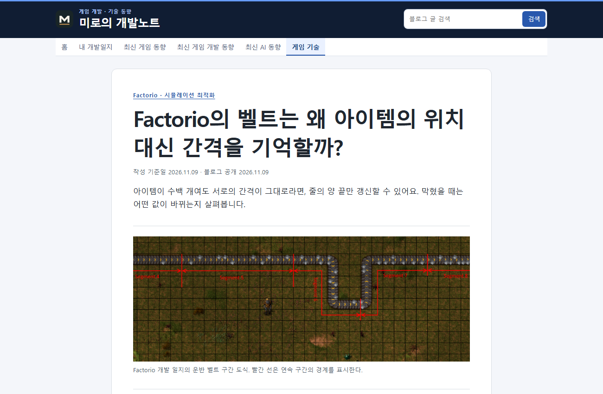

Tracefolio REPORTS & ISSUES
Tracefolio REPORTS & ISSUES문문동준 개발 블로그수정사항
Markdown 폴더로 블로그 카테고리 결정
검증 대기Markdown 파일이 들어 있는 폴더에 따라 목록과 본문의 카테고리를 정합니다.
작업 결과
716개 Markdown 원본을 여섯 폴더로 옮겼습니다. 파일을 다른 카테고리 폴더로 옮기면 다음 배포에 새 목록으로 나타나며 같은 파일명은 기존 URL을 유지합니다.
변경 내용
적용 내용
기존 JSON의 section보다 폴더가 우선합니다. 새 일반 Markdown도 카테고리 폴더에서 게시할 수 있습니다. 중앙 아카이브 가져오기는 posts/archive/를, 자동 발행은 카테고리별 폴더를 사용합니다.
대화 기록
- 사용자(시각 미기록) — 「내가 md 파일 위치 옮기면 그쪽에 게시 되도록 폴더 기준으로 카테고리 작업되도록 해」라고 요청했습니다.
- AI(시각 미기록) — 기존 원고를 분류하고 실제 이동과 URL 보존을 확인하겠다고 답했습니다.
검증
실제 게임 기술 글과 개발일지 글을 AI 동향 폴더로 임시 이동해 새 목록으로 들어가고 기존 목록에서 빠지는 것을 확인했습니다. 기존 글 주소로 계속 열렸습니다. 첫 확인은 로컬 연결이 끊겼고, 연결 방식을 수정한 뒤 통과했습니다. 검증 후 두 원고를 원래 분류로 되돌렸습니다. 기존 빌드 확인에서 내부 링크 누락은 0건이었고, 운영 카테고리 여섯 곳과 글 주소 두 곳의 응답을 확인했습니다.

남은 사항
카테고리 폴더 이름은 README에 있는 여섯 가지를 사용합니다. 전역 지침은 변경하지 않았습니다. 전후 캡처는 본문과 메뉴 판독을 위해 브라우저 원본을 첨부했습니다.
작업 시간
- 제안 시간: 구현과 확인 약 5~8분.
- 실제로 완료된 시간: 2026-11-09 21:25:02 KST부터 확인했고 2026-11-09 21:29:48 KST 운영을 확인했습니다. 보고서 공개 시각은 최종 응답에 기록합니다.
- XERJ: 미사용 — rg, 빌드 결과와 실제 Chrome 화면으로 확인했습니다.